Sistema Multiagente Inteligente de Cobrança com LLM, RAG e Machine Learning
06/11/2026 — pré-apresentação, parte 2
Duas partes do sistema que ainda não estão construídas e que aqui aparecem como protótipos de tela, montados sobre o que já existe e foi medido:
| Tela | O que é real | O que é protótipo | |
|---|---|---|---|
| 1 | Chamada de voz (entrega 15) | o áudio (sintetizado localmente pelo Piper), a transcrição pelo Whisper local, a intenção, a consulta à base, a regra de leitura de volta e todos os tempos medidos | a tela, o transporte WebRTC, a geração do texto do agente |
| 2 | Console interno | as probabilidades dos dois modelos publicados e o porquê de cada uma (SHAP) para os 1.167 clientes; a tabela de parcelamento e os limites de alçada | a tela, os nomes, os contadores operacionais do dia |
Arquivos que acompanham este PDF:
video/00-demo-voz-e-console.mp4: as duas demonstrações
com cartelas, 1 min 58 s, com áudiovideo/02-chamada-de-voz.mp4: a chamada completa, 69 s,
com áudiovideo/01-console.mp4: o percurso pelo console, 40
simg/: todas as telas em alta resoluçãomock/: as páginas do protótipo, que abrem no navegador
(console.html, voz.html)O cliente atende uma chamada no navegador. O aviso de gravação é a primeira frase e não pode ser pulado. Ao lado, o painel Por dentro do agente mostra, a cada turno, o que o sistema ouviu, o que entendeu, o que consultou e quanto tempo cada etapa levou.
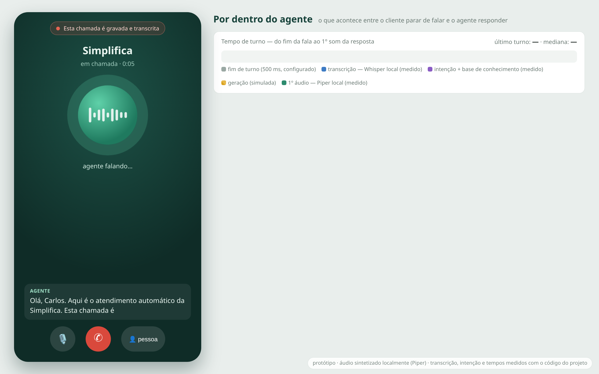
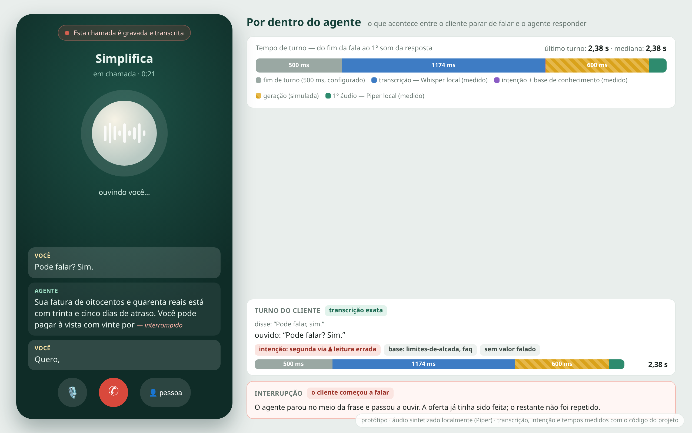
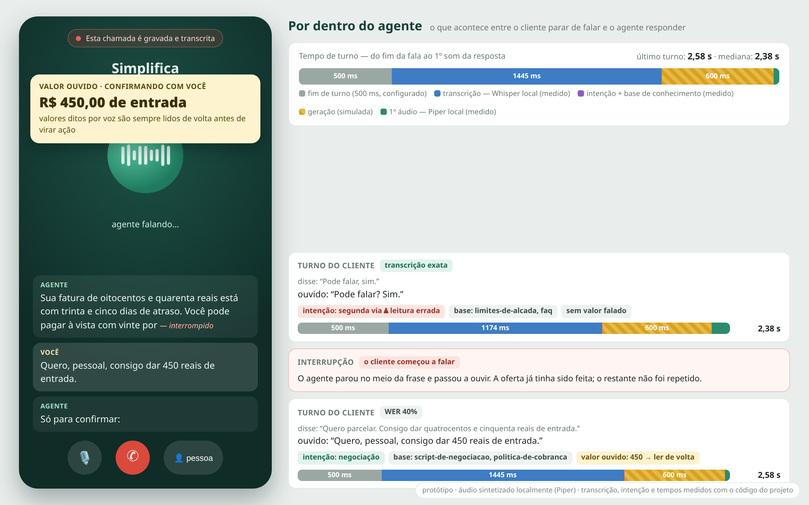
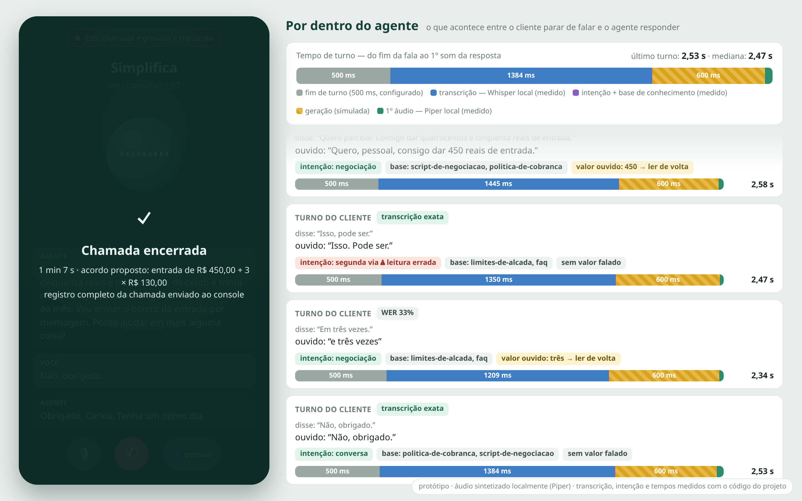
O roteiro. Carlos deve R$ 840,00 com 35 dias de atraso, o que o coloca na faixa de 31 a 60 dias da tabela: entrada mínima de 15%, até 10 parcelas, 20% de desconto à vista e juros de 1,5% ao mês. Ele oferece R$ 450,00 de entrada e o restante em 3 vezes de R$ 130,00: dentro da alçada automática (até 12 parcelas) e acima da parcela mínima de R$ 50,00.
Medido nesta máquina (Ryzen 7 5700X3D, só CPU) com o código do
projeto: o áudio do cliente foi sintetizado pelo Piper, transcrito pelo
WhisperTranscriber (modelo small, int8), e o
texto passou pelo classificador de intenção, pela resolução de intenção
pelo contexto da conversa, pela busca na base e pela regra
needs_confirmation.
| O cliente disse | O Whisper ouviu | Intenção | Lê de volta? | STT | Turno |
|---|---|---|---|---|---|
| “Pode falar, sim.” | “Pode falar? Sim.” | segunda via ⚠ | — | 1.174 ms | 2,38 s |
| “Quero parcelar. Consigo dar quatrocentos e cinquenta reais de entrada.” | “Quero, pessoal, consigo dar 450 reais de entrada.” | negociação | 450 | 1.445 ms | 2,58 s |
| “Isso, pode ser.” | “Isso. Pode ser.” | segunda via ⚠ | — | 1.350 ms | 2,47 s |
| “Em três vezes.” | “e três vezes” | negociação | três | 1.209 ms | 2,34 s |
| “Não, obrigado.” | “Não, obrigado.” | conversa | — | 1.384 ms | 2,53 s |
Tempo de turno (do fim da fala ao primeiro som da resposta), mediana 2,47 s:
| Etapa | Tempo | Origem |
|---|---|---|
| Detecção de fim de turno | 500 ms | configurado (janela de silêncio), não medido |
Transcrição (Whisper small,
local) |
1.174–1.445 ms | medido |
| Intenção + base de conhecimento | 2,5–3,5 ms | medido |
| Geração do texto | 600 ms | simulado: sem chave de LLM nesta máquina |
| Primeiro áudio da resposta (Piper, local) | 21–101 ms | medido |
av instalada pelo uv.lock, a
transcrição real pelo Whisper falha (metadata_errors). A CI
não percebe porque usa o transcritor roteirizado. Fixar
av<19 resolve; as medições acima foram feitas com
av 18.Cada ponto do gráfico é um cliente real da base de demonstração. A posição vem das duas probabilidades que os modelos publicados calculam para ele: propensão a pagar (eixo horizontal) e risco de inadimplência (eixo vertical).
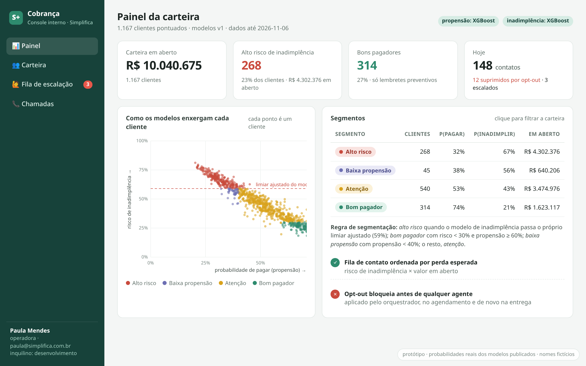
| Segmento | Regra | Clientes | P(pagar) | P(inadimplir) | Atraso médio histórico | Faturas pagas com atraso |
|---|---|---|---|---|---|---|
| Alto risco | inadimplência ≥ limiar ajustado (59%) | 268 | 32% | 67% | 178 dias | 92% |
| Baixa propensão | propensão < 40% | 45 | 38% | 56% | 113 dias | 87% |
| Atenção | o restante | 540 | 53% | 43% | 41 dias | 55% |
| Bom pagador | risco < 30% e propensão ≥ 60% | 314 | 74% | 21% | 7 dias | 34% |
Os segmentos não foram desenhados à mão sobre o histórico: saem das duas probabilidades. O histórico de cada segmento (as duas últimas colunas) mostra que eles separam comportamentos de fato diferentes. A probabilidade de inadimplência não está calibrada (o modelo foi treinado com peso extra na classe rara), por isso o corte usa o limiar ajustado do próprio modelo, não 50%.
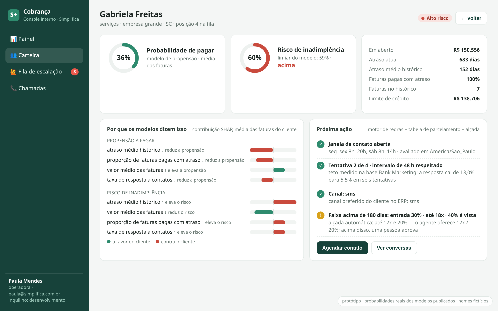
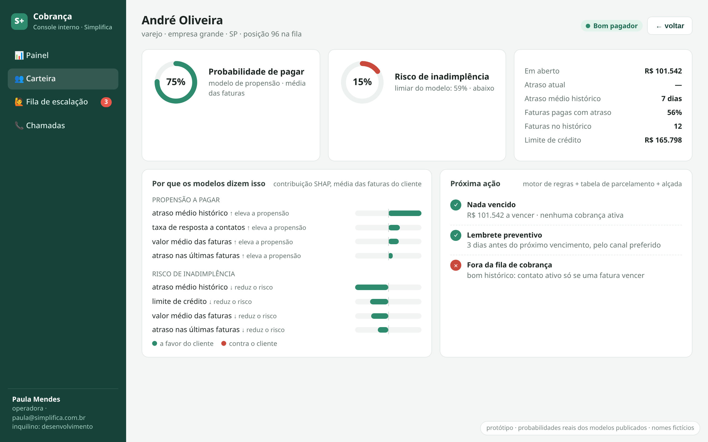
Por que os modelos dizem isso. Para cada cliente, a contribuição SHAP de cada variável, na média das suas faturas. As explicações batem com o histórico: no cliente de alto risco, o atraso médio histórico e a proporção de faturas pagas com atraso empurram o risco para cima; no bom pagador, o mesmo atraso médio histórico (7 dias) é o que mais o empurra para baixo, seguido pelo limite de crédito e pelo atraso das últimas faturas.
Próxima ação. O console junta o que os modelos dizem
com o que as regras permitem: janela de horário legal (em
America/Sao_Paulo), limite de tentativas e intervalo
medidos na base Bank Marketing, canal preferido do cliente, a faixa da
tabela de parcelamento e os limites de alçada.
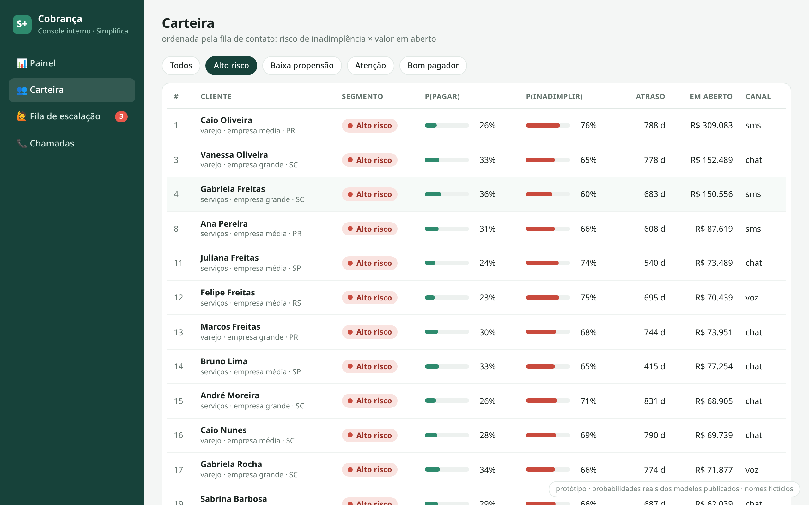
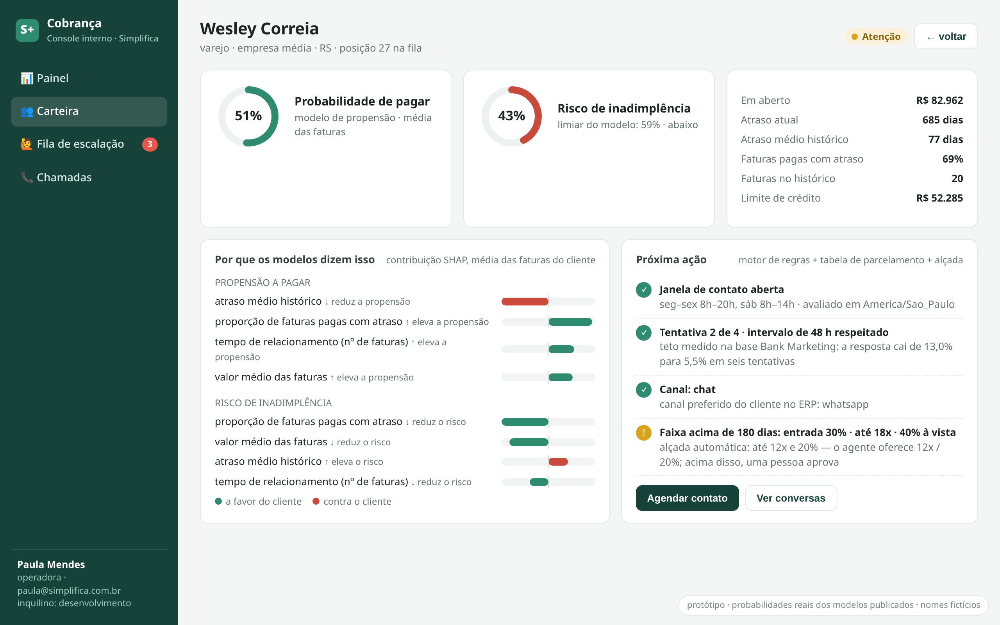
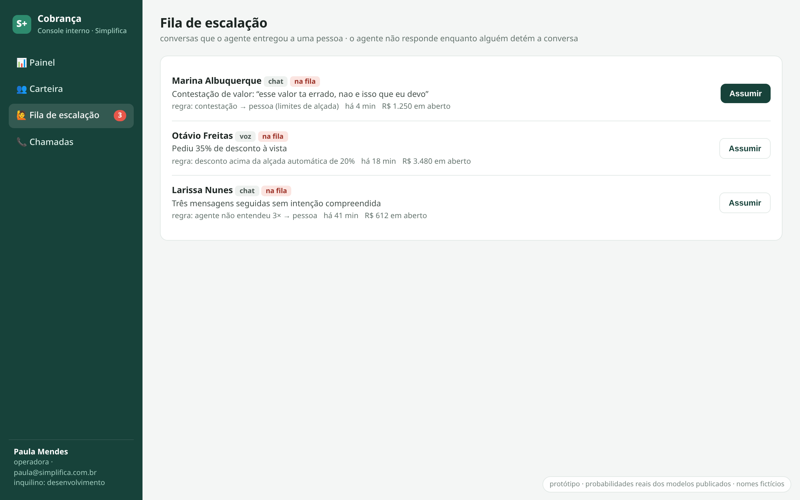
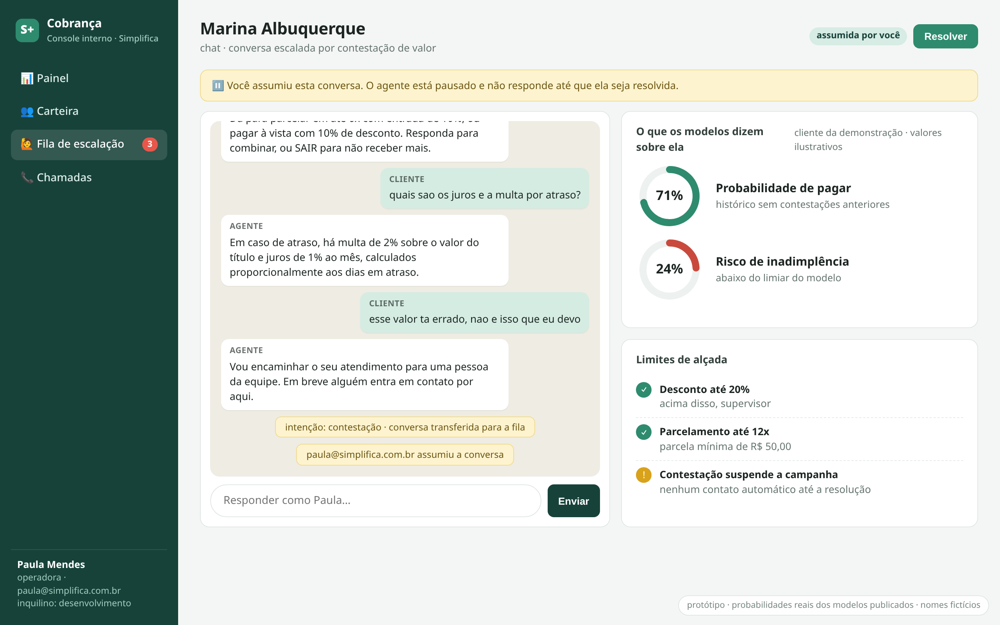
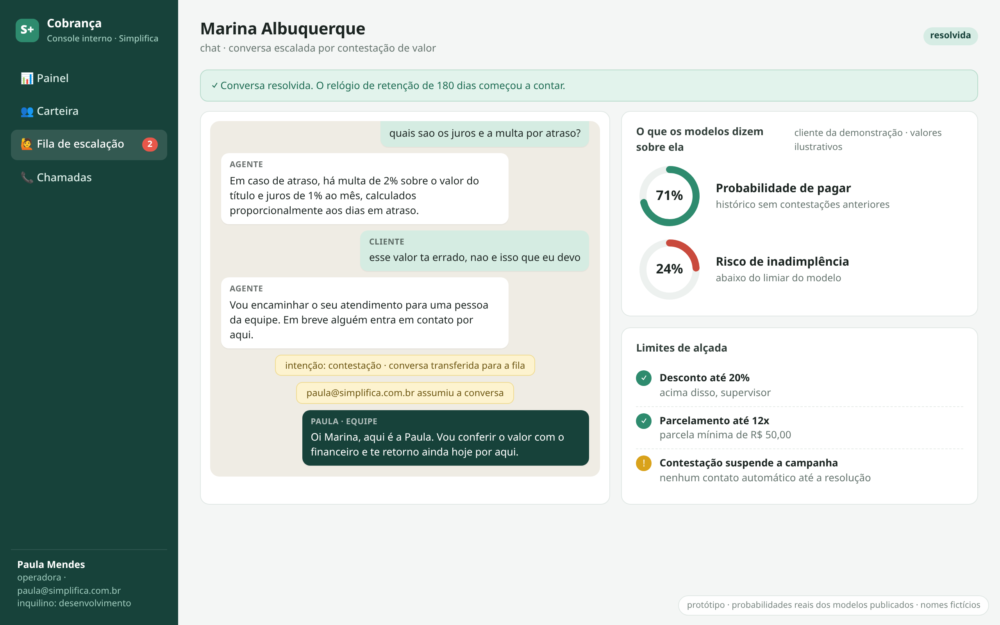
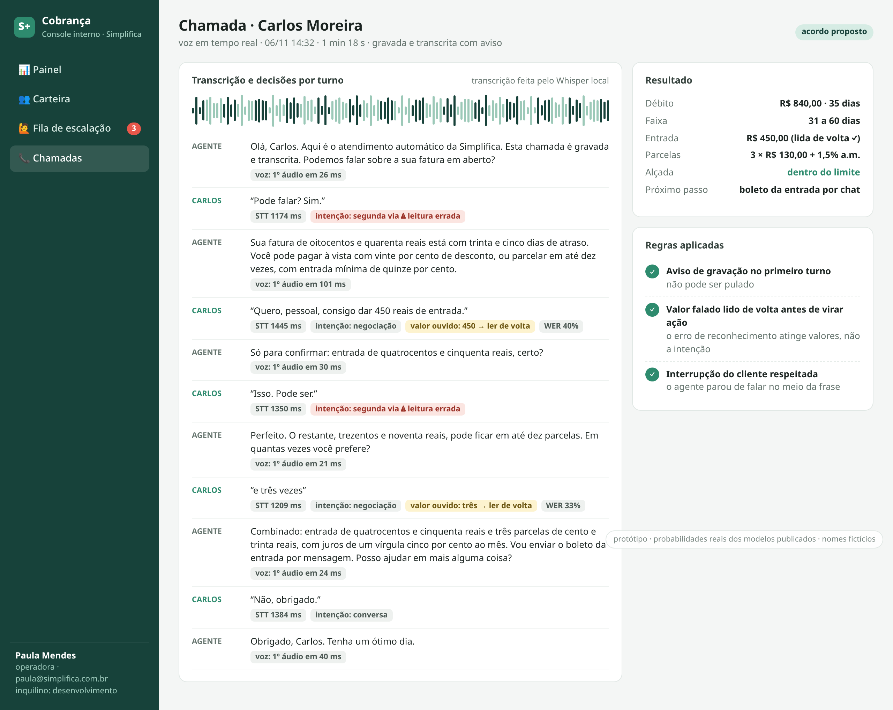
A fila e o “assumir/resolver” já existem no código (PR #29, comandos
make queue, claim, resolve); o
que esta tela acrescenta é a interface.
collection score. O script está em
scripts/export_portfolio.py.faber para
o agente, jeff para o cliente), rodando localmente: nenhum
áudio saiu da máquina. É também a candidata natural para a decisão de
TTS da entrega 15.